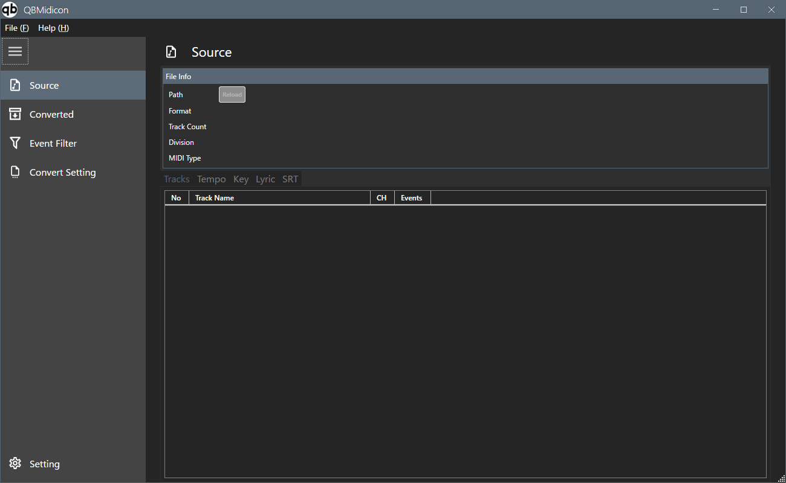
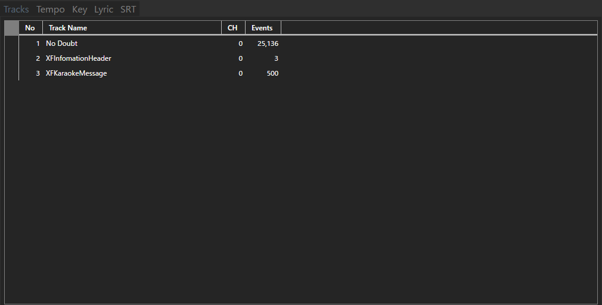
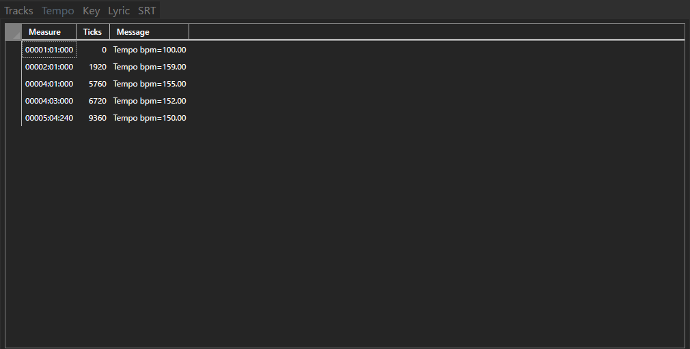
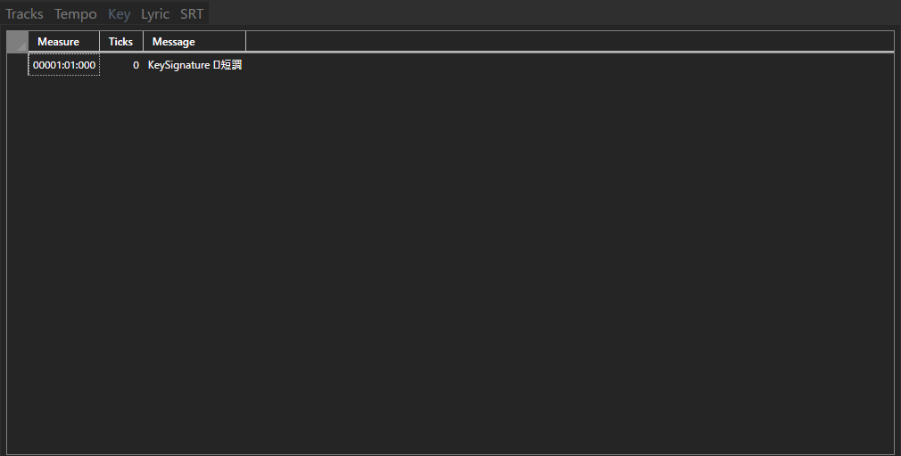
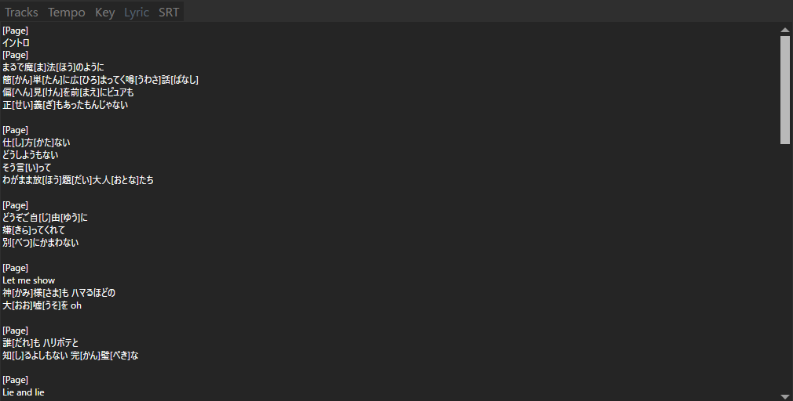
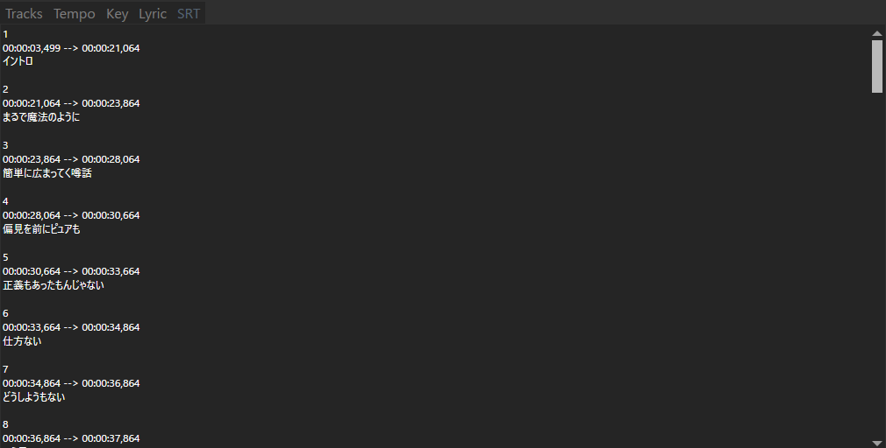

読み込んだSMFファイルの情報とトラック一覧を表示します

画面項目
読み込んだSMF内の各トラックを一覧表示します

| 項目 | 説明 |
|---|---|
| No | トラック番号 |
| Track Name | トラック名 |
| CH | MIDIチャンネル |
| Events | トラック内のイベント数 |
ファイル内のテンポ変化イベントを一覧表示します

| 項目 | 説明 |
|---|---|
| Measure | イベントの位置（小節：拍：ティック） |
| Ticks | イベントの位置（ティック単位の絶対値） |
| Message | テンポ変化の内容（例：Tempo bpm=100.00） |
ファイル内の調（キー）設定イベントを一覧表示します

| 項目 | 説明 |
|---|---|
| Measure | イベントの位置（小節：拍：ティック） |
| Ticks | イベントの位置（ティック単位の絶対値） |
| Message | 調の設定内容（例：KeySignature ロ短調） |
ファイル内の歌詞イベントをテキスト表示します

歌詞データを字幕（SRT）形式のタイムコード付きテキストとして表示します
